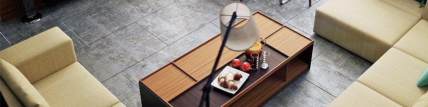

T
Today Andrey Sokruta Interior Design Studio successfully applies the strongest wishes of our clients to reality. Good responses
of our clients and their happy smiles are the best proof for it. If you face the choice of a team to trust your new interior
design, we are glad to offer out services
My artistic life started in the kinder garden, where on the classes of plasticine modeling and drawing my works turned
out to be much better than the others’. Back then I did not know, that I did it good, but I definitely was satisfied
by the process itself.
Later, in school, I attended drawing classes and in seventh form I entered an artistic school. The teachers of art usually
praised me and showed my works to the class. At that moment I had already realized, that I definitely am a creative person.
And of course, when I was to choose the higher education institution, there could be no doubts – my choice was directly
connected to art. In Sumy Dmitry Bortniansky High School of Art and Culture there passed four years of my life, which
turned out to be most interesting and filled with art. In School we were learned the following classes: painting, drawing,
sculpture, ceramics, composition, design. This very period became significant in forming my aesthetic acceptance of the
world surrounding me.
I remember, that this was the time I felt passionate about interior design. And that is why my next step became Kharkov State
Academy of Design and Arts. Here I learnt the bases of interior design and became sure, this was my path.
After the years of studying and self-improving in schools and higher education institutions the time has come to start practicing.
And in 2008, I successfully fulfilled my first real project.

IT WAS THEN AND THERE DESIGN STUDIO SOKRUTA ANDREI WHICH TO THIS DAY GIVES OUR CUSTOMERS A QUALITY PRODUCT IN A DESIGN.